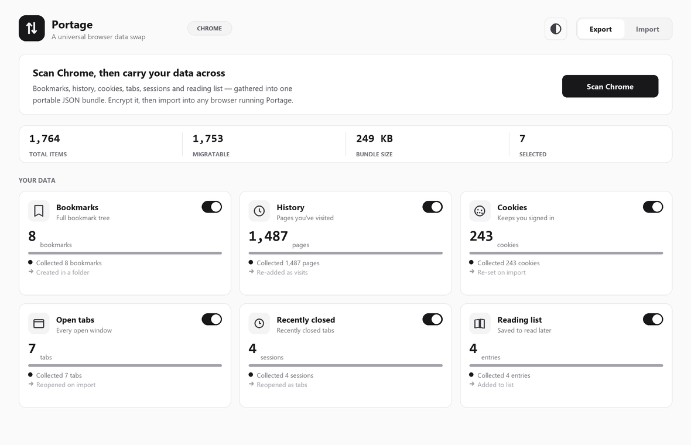
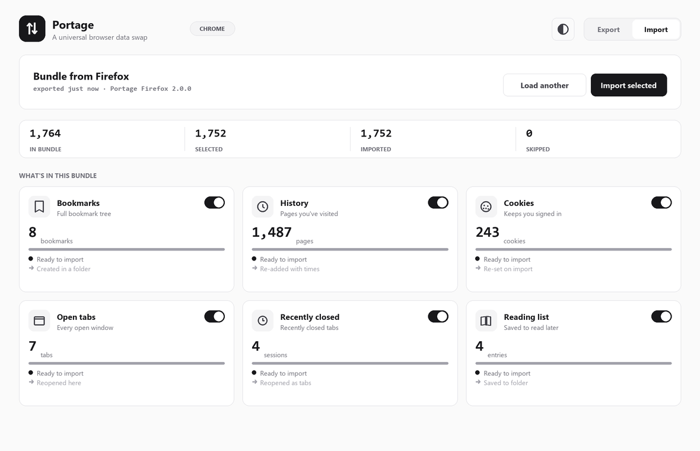
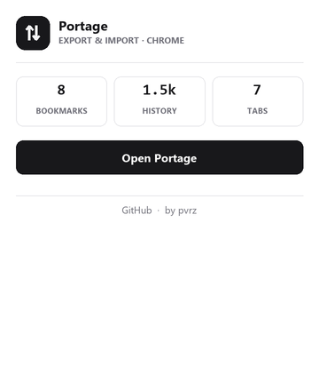

Portage gathers your bookmarks, history, cookies, tabs, sessions and reading list into one encrypted, portable file — then rebuilds it in any browser. Chrome → Firefox, Firefox → Chrome, or the same browser on a new machine.

Built on the official browser APIs — so it only ever touches data it can actually move, and never pretends otherwise.
It's just JSON, so it doesn't care who made it. Chrome ↔ Firefox, or the same browser on a new machine, profile or reinstall.
Optional AES-256-GCM with PBKDF2 key derivation. Your bundle — cookies and all — is unreadable on disk without your passphrase.
Bookmarks, history, cookies, open tabs, recently closed sessions and your reading list — recreated faithfully on the other side.
No API can reinstall extensions, so Portage exports them as a tidy .txt with store-search links for both browsers — perfect for an AI assistant.
Monochrome by default, with light/dark and any accent colour you like. The palette auto-adjusts to keep text crisp and legible.
Nothing is uploaded, ever. Data lives only in the page while you work and is wiped from memory the moment you export or import.
Animated progress, live counts and honest status on every category — so you always know exactly what's moving.
One click scans your browser and lays out everything Portage can carry. Toggle off anything you'd rather leave behind, encrypt it, and save a single portable file.
Open Portage in the destination browser, drop the file in, and it recreates your data through the official APIs. Encrypted bundles simply ask for your passphrase first.

A compact popup shows live counts at a glance and opens the full workspace in a click. Themed to match the rest of Portage, in light or dark.

Extensions can only use the browser APIs — so this is everything Portage moves, and exactly how.
| Data | Export | On import |
|---|---|---|
| Bookmarks | Full tree | Recreated in a “Portage Import” folder |
| History | Yes | Re-added — Firefox keeps titles & times |
| Cookies | Yes | Re-set, so logins carry over |
| Open tabs | Yes | Reopened in the window |
| Recently closed | Yes | Reopened as tabs |
| Reading list | Yes | Chrome → reading list · Firefox → bookmark folder |
| Extensions | List | Checklist only — no API can reinstall them |
| Passwords & autofill | — | No browser API exists — use the built-in export |
Free, open source, and entirely on your machine. Install Portage in under a minute.